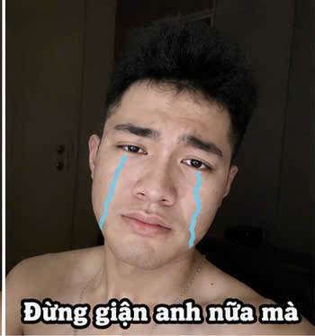
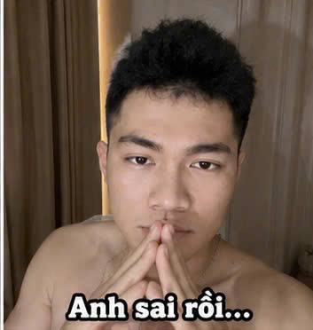
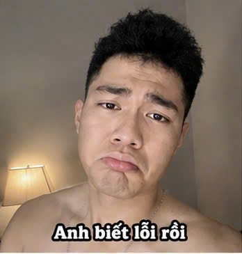
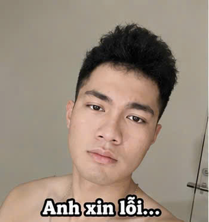
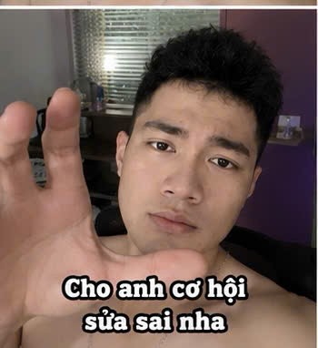
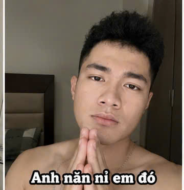
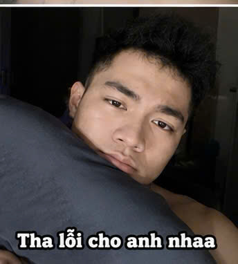

🍜
Vì anh vào quán
Sáng nay anh chỉ nghĩ đưa đồ ăn cho em, k nghĩ mình sẽ làm em khó xử đến vậy. Anh sai rồi.
A làm cái này k phải để biện hộ hay giải thích gì cả.
Chỉ là lời xin lỗi anh muốn nói với em thật lòng nhất.

Anh biết em k muốn ông Tâm nhìn thấy vì ổng sẽ nói kháy.
Anh biết mỗi lần anh vô tình để ổng thấy là em lại khó chịu.
Và hôm nay, vì anh thiếu để ý nên anh làm em giận a thêm. Tất cả là tại anh.

Anh k có ý làm em giận… nhưng anh hiểu là em vẫn rất k vui vì anh.
Sáng nay anh chỉ nghĩ đưa đồ ăn cho em, k nghĩ mình sẽ làm em khó xử đến vậy. Anh sai rồi.
Anh biết em sợ bị ổng thấy, anh cũng đã ngó thật kỹ lúc a vừa tới gặp a Thức để xem coi có ông Tâm hay ông Tây k… vậy mà vẫn để ổng ấy thấy. Anh hối hận lắm.
Em xứng đáng được yên ổn, vui vẻ — k phải tức giận vì anh. Anh xin lỗi em.
Có chuyện k thể làm cho chưa từng xảy ra… nhưng lời xin lỗi này thì thật lòng.


Anh không dám xin nhiều… chỉ mong em mở lòng với anh lại một chút thôi.


Anh viết những dòng này khi lòng nặng như bị đá đè. Anh biết em đang giận, và lần này là tại anh — anh xin lỗi em.
Sáng nay anh đến quán, trong đầu anh chỉ có mỗi một ý nghĩ là đưa đồ ăn cho em. Anh k nghĩ kỹ rằng anh lại làm em khó xử, để em phải bị ổng thấy với cả mấy câu nói kháy.
Anh biết em sợ bị ông chủ thấy. Hôm nay anh đứng ngoài ngó thật kỹ rồi mới dám vào… vậy mà hôm nay lại xảy ra chuyện như vậy. Anh biết lỗi và hối hận lắm, em à. Anh cứ tự trách mình suốt từ sáng tới giờ.
Nhìn mấy mxh a có thể nhắn cho e bị block, tim anh thắt lại chặt lắm. Nhưng anh k trách em, em có quyền giận với cả đây là lỗi của a. Anh chỉ sợ mỗi một điều: em im lặng với anh.
Anh buồn. Buồn k phải vì bị block, mà vì anh đã làm em buồn, làm em phải giận vì lỗi của anh. Em cứ mắng anh đi, anh chịu hết — chỉ cần đừng im lặng với anh là được.
Nếu em đọc được những dòng này, anh mong em nhắn cho anh một câu thôi — dù là câu mắng, dù chỉ là chữ "qq", anh cũng vui lắm rồi.
Anh hứa: anh sẽ cẩn thận hơn nhiều, sẽ để ý cho em kỹ hơn, sẽ k để em phải khó xử vì anh nữa. Anh xin lỗi em — thật lòng, và xin lỗi cả những lần trước anh chưa làm em thấy an tâm.
Anh đợi tin em và mai anh cũng sẽ đợi em đi học hoặc đi làm.
